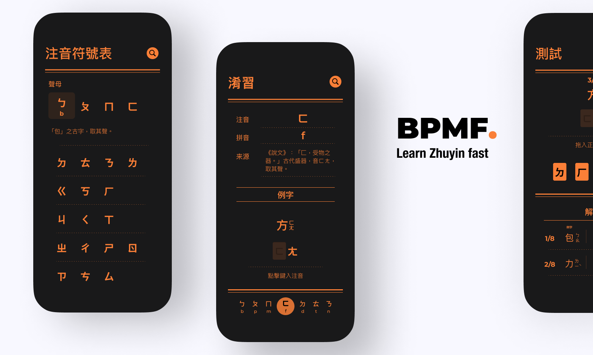
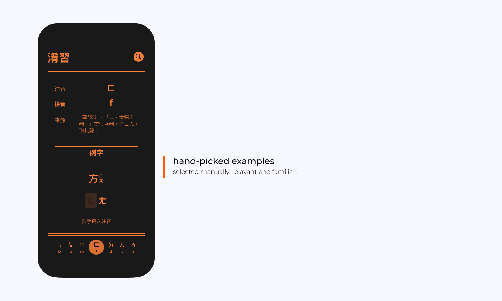
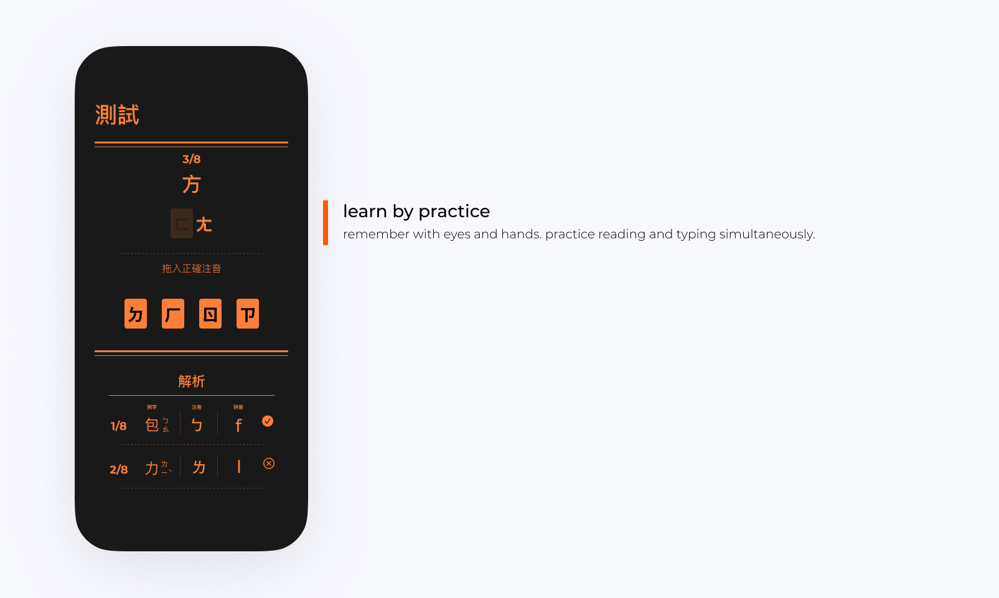
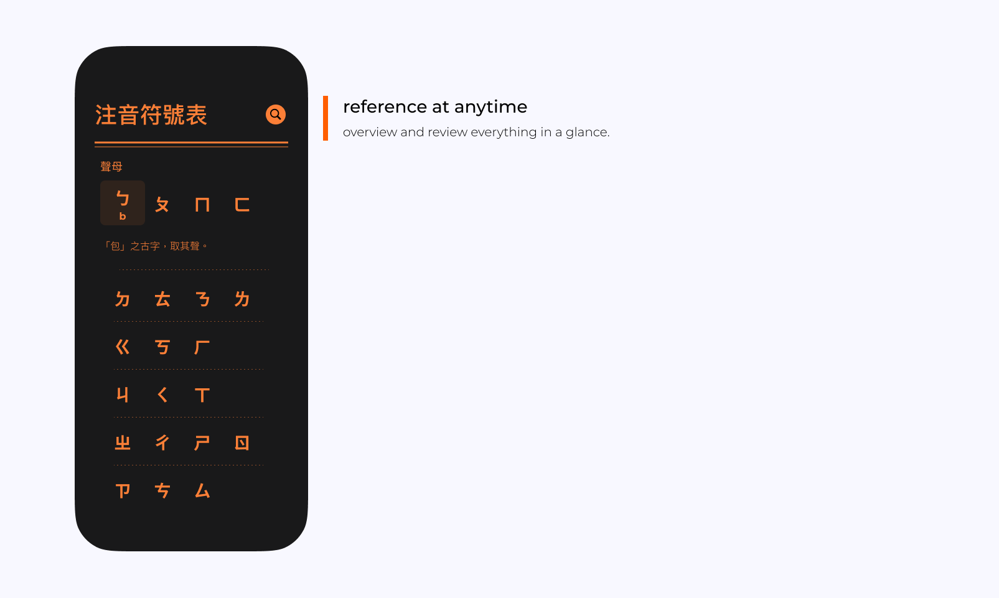

BPMF
Learn Zhuyin efficiently for Pinyin users
BPMF provides an efficient learning experience for native Mandarin speakers who already know Pinyin, a common alphabetical transliteration system for Simplified Chinese, to learn Zhuyin, a character transliteration system for Traditional Chinese.
Existent Zhuyin-learning apps are mostly designed for young learners who do not already know any transliteration system, and probably know very little or no Chinese characters. For those who already know Pinyin and Chinese characters, BPMF maximizes the effectiveness of the learning process, helping understand, memorize and reference Zhuyin in the most straightforward way.
Hand-Picked Examples
All transliteration examples are manually selected to efficiently help with memorization. Because Zhuyin is developed from Chinese characters, usually there is a corresponding Chinese character that looks very similar to the Zhuyin and use the Zhuyin as a part of its pronunciation. Yet it is not completely intuitive for learners to associate the Chinese character to the simplified, abstract Zhuyin character they are viewing. Therefore, good Chinese character example matters significantly in helping make the correct association and memorize Zhuyin quickly.
Learn by Practice
Because each Pinyin has its corresponding Zhuyin character, users who know Pinyin should already be very familiar to the Zhuyin pronunciation. BPMF assumes much higher level of language familiarity, shorten the warm-up time and let learning start directly from practice.
BPMF lets user try typing the Zhuyin while they are viewing it, so that they get familiar to the special keyboard layout as soon as they start learning. The gesture of finding the Zhuyin character from the keyboard also helps user remember the shape of the character.
Users can choose to directly go to practicing tab and learn by passing the test. Common Zhuyin apps usually lock characters by group of three or four. Users must learn by order, which is a great way for children to learn how vowels and consonants are grouped by custom. BPMF assumes its users to already know these norms and unlocks all practices at the beginning. BPMF gives users the option to learn by random order.
References at Anytime
BPMF let users search by Pinyin to find the corresponding Zhuyin character when users just need a quick reference. Very few existent Zhuyin apps let users search or give a list of all Zhuyin characters, because for their target users, a mobile app is usually auxiliary to textbooks and dictionaries. BPMF serves as a stand-alone source of reference for users who learn Zhuyin out of school.